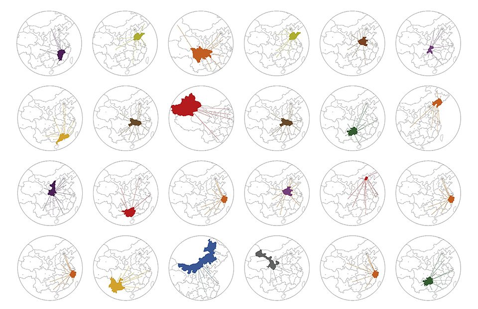

Overview
This was the second-phase of the design project for Taobao.com and Alibaba.
I worked as the designer and data visualizer on this project.
I collaborated with PM, data and software development engineers to build data-analytics tools for Taobao store oweners to power their online e-commerce business.
All research documentation, data-based maps, interactives and other visual assets (except photos) were designed, coded and created by me. Only a part of the design is presented here due to NDA.
The design (public) was presented to 370M+ Taobao users and the data tool (internal) was delivered to 5M+ Taobao e-commerce store-owners. The design was showcased in 2014 Taobao E-commerce Conference as well as 2014-2015 Shanghai Biennale.
Design Challenge
This project was designed based on transaction data of Alibaba's Taobao.com (one of the largest e-commerce platforms in the world with over 6 million online store owners) during 2013.11.11 E-commerce Fest. The focus was to find out the transaction pattern across mainland China and the connections between city buyers and village sellers. Main design challenges include:
1. Explore the e-commerce villages which have contributed to the major transactions
2. Use the data to connect the villages and cities
3. Design data viz tools for Taobao store oweners to optimize their logistics
Connecting cities and villages.
Transactions mapped.
The map visualized all Taobao shipments from top five e-commerce villages during 2013.11.11 E-commerce Fest. Seller villages are marked as blue circles while buyer cities as grey, the size of transaction (the number of parcels in total) was measured by the area of each circle. Different colors represents different villages' transactions, and the linewidth represents the size of that single transaction.
Zoom in and out to explore the transaction pattern. Hover over connecting lines to see transaction details.
Taobao Villages
(store number ~1500)
Taobao Villages
(store number ~100)
City Buyers
(items bought ~7500)
City Buyers
(items bought ~500)
Transaction
(parcels shipped ~1000)
Transaction
(parcels shipped ~200)
Taobao.com in the countryside.
Store owners and their products.
By 2014, one in five Taobao sellers are living in China's rural areas and there are over 200 Taobao villages across China. Technology and E-commerce are reshaping the relationship between city and countryside. Since the economic crisis of 2008, more and more people choose to stay in their home villages and use internet to change their lives.
From village to city.
During the period of E-commerce Fest, thousands of products were shipped from the e-commerce villages through online stores everyday. Most of buyers are living in cities. The e-commerce builds a mutual beneficial partnership between rural residents and city dwellers.

Power store-owner with data.
During the period of E-commerce Fest, thousands of products were shipped from the e-commerce villages through online stores everyday. Most of buyers are living in cities. The e-commerce builds a mutual beneficial partnership between rural residents and city dwellers.